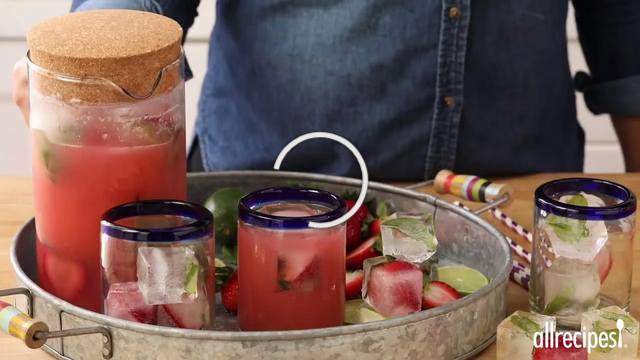

Back to Main Page
Mexican Stawberry Agua
Fresh fruit waters, or Aguas de Frutas, made with crushed or blended fruit are a common and popular drink all over Mexico. This recipe is extremely flavorful and refreshing, especially when fresh strawberries are in season.

- Prep: 25 mins
- Additional: 4 hrs
- Total: 4 hrs 25 mins
- Servings: 10
- Yield: 10 servings
Ingredients
- 4 cups strawberries, sliced
- 1 cup white sugar
- 8 cups cold water
- 1 lime, cut into 8 wedges
- 8 fresh mint sprigs
Directions
- In a medium bowl, mix together sliced strawberries, sugar, and 1 cup of water. Cover the bowl with plastic wrap and place in the refrigerator for 4 hours.
- Remove the strawberry mixture from the refrigerator and pour into a blender. Blend on high until smooth. Pour the blended berry mixture through a wire mesh strainer set over a large mixing bowl; discard the pulp and seeds.
- Add the remaining 7 cups cold water to the pureed strawberries and mix well. Place the Aqua de Fresa in the refrigerator to chill for several hours or pour over ice and serve immediately. Garnish with lime slices or mint leaves.
Nutrition Facts
Per Serving: 100 calories; protein 0.5g; carbohydrates 25.6g; fat 0.2g; sodium 6.5mg. Full Nutrition